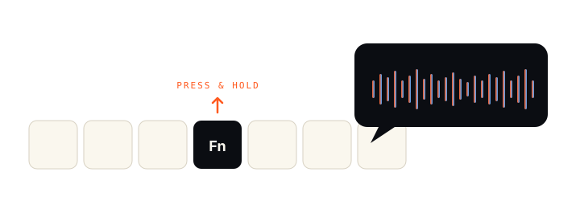
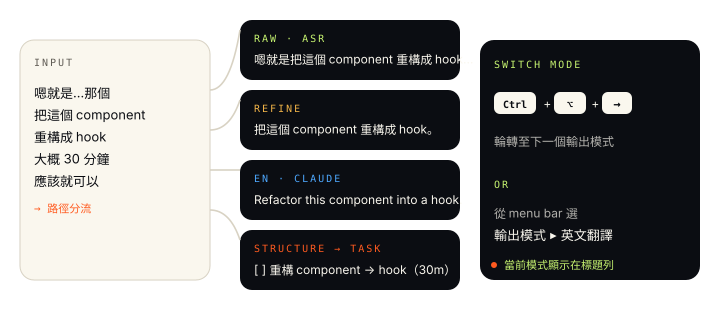
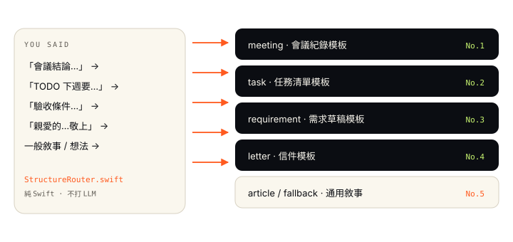
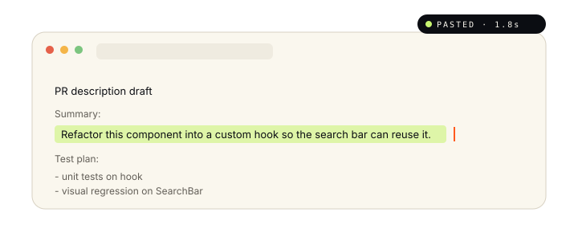
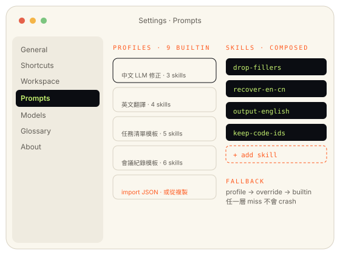
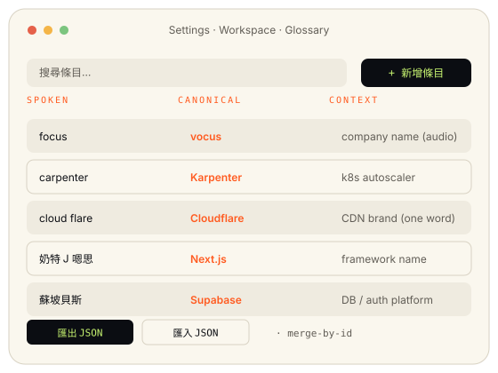

No.01 · capture
按住 Fn 講話，放開就送出
不用按 toggle，不用喚醒詞。按住、講、放開，三步完成輸入。

不用按 toggle，不用喚醒詞。按住、講、放開，三步完成輸入。

用 Xiaomi 開源的 MiMo-V2.5-ASR（MLX INT4），中英 code-switching 是 native 能力， 不是「中文 ASR 強行接英文 token」。
依當下需要切換：最快的純 ASR、清掉口語雜質的修正、給 Claude Code / Cursor 的英文翻譯、自動分流到模板的複合情境。

選「複合情境」後，純 Swift router 看內容裡有沒有「會議結論 / TODO / 驗收條件 / 敬上」這類關鍵字， 自動切到對應的 5 種模板。不打 LLM 做 routing，省一次 call。

貼上的時機點是你放開 Fn 的當下；不會跳出獨立視窗、不會打斷你正在打字的 app。 Overlay 顯示 Listening → Refining → Done 三態，狀態列也同步。

不打 LLM，講完就貼。當你只要把口述變成純文字，越快越好。
用小 LLM call 去掉口語雜質（嗯、那個、就是…），保留原意。
口述中文 → 英文。輸出語氣偏給 AI 工具讀的工程語，不是文學翻譯。
關鍵字自動分流到 5 種模板：會議紀錄 / 任務清單 / 需求草稿 / 信件 / 文章。
切換方式： Ctrl+⌥+→ / ← 在 4 種模式間輪轉， 或從 menu bar mic 圖示挑「輸出模式」子選單。
每種輸出模式背後是一組 Profile。Profile 由 N 個 Skill compose 而成
（例：output-english-only + recover-en-cn-homophones + drop-fillers）。


公司名、產品名、內部 repo、雲端 brand — 這些 LLM 最常猜錯的字， 開機時自動 inject 進 system prompt 的 Glossary section。
focus→vocuscarpenter→Karpentercloud flare→Cloudflare奶特 J 嗯思→Next.jsJSON 匯入 / 匯出走 merge-by-id：同 id 取代，新 id 追加。
放開後依當前模式處理並貼到游標。
raw → refine → claudeCode → structure 輪轉。
錄音 + 存 trace + 存 Clipboard History，不貼上。
看歷次轉錄結果，含 trace 連結。
監看 ASR / LLM 模型 RSS。
7 個 panes：Profiles / Skills / Glossary / Shortcuts / ...
錄音熱鍵在 Settings → Shortcuts 可改，5 個 preset 切換：Disabled / Fn / Control+Option+Space / Control+Option+V / Command+Shift+Space。
DMG 是 self-signed（沒做 Apple Notarization），第一次打開要右鍵 → 開啟。 詳細步驟在 DMG 內附的 README-INSTALL.txt 雙語版。
這個 app 是前端，會打 local-llm-backend gateway（:4000）。
gateway 後面再 fan-out 到 ASR sidecar（本 repo 內附，:8766）和你自選的 LLM backend（推薦 Rapid-MLX、Ollama、vLLM 都可）。
ASR sidecar 第一次跑會下載 ~4.5 GB 的 INT4 MLX model 到 ~/.cache/mimo-asr/。LLM 自己挑，建議 Qwen3-8B 或同等級以上。